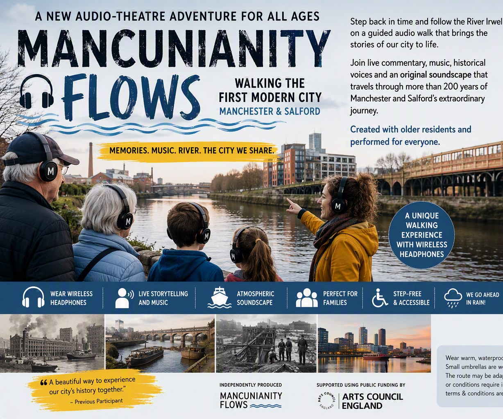
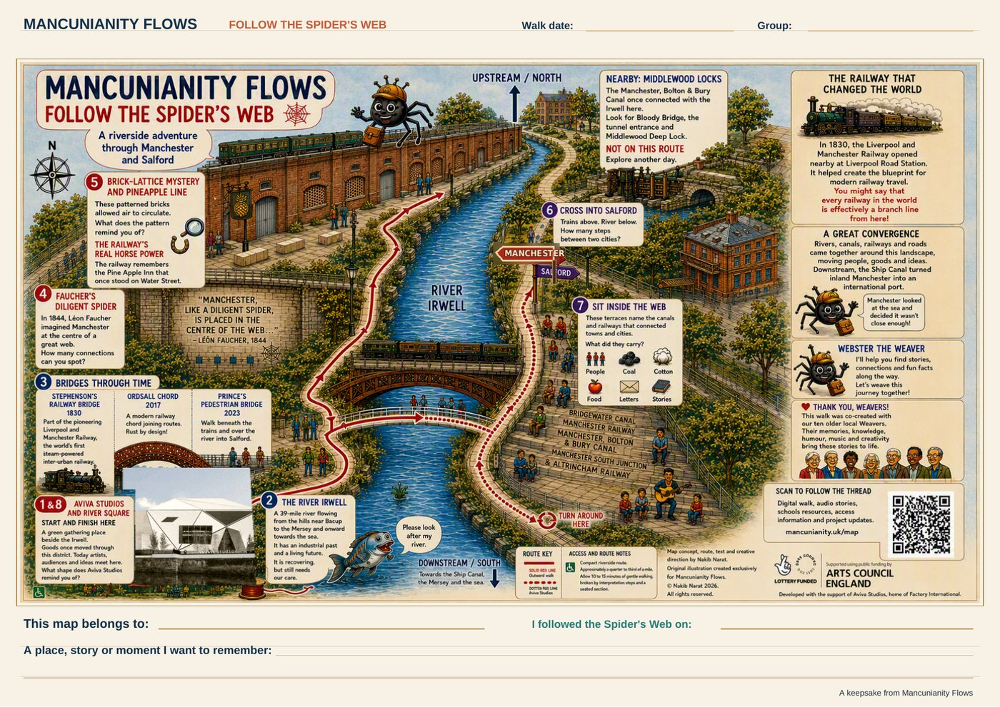
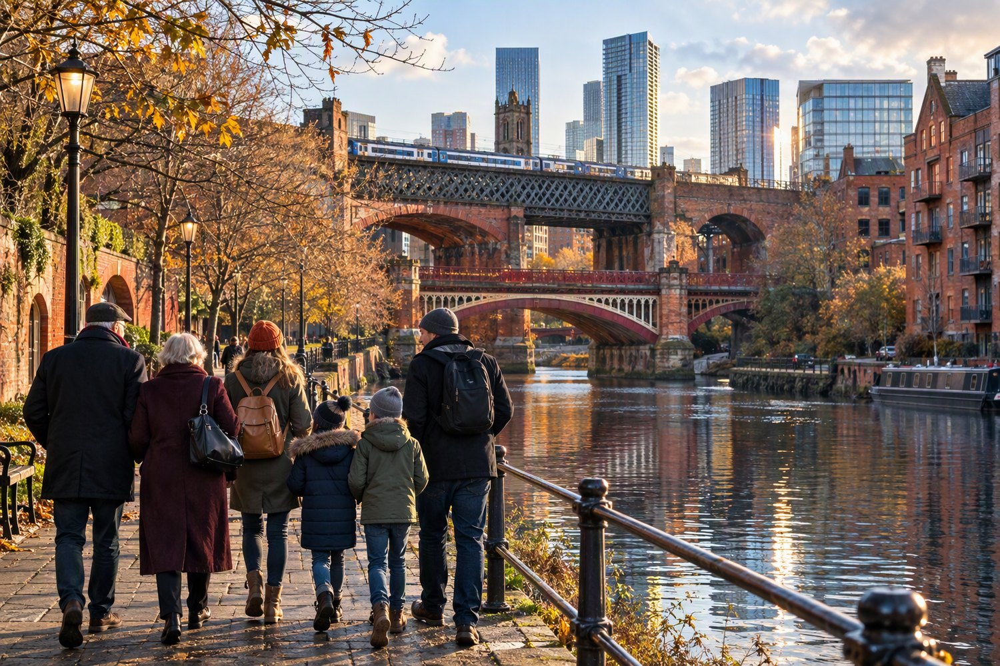
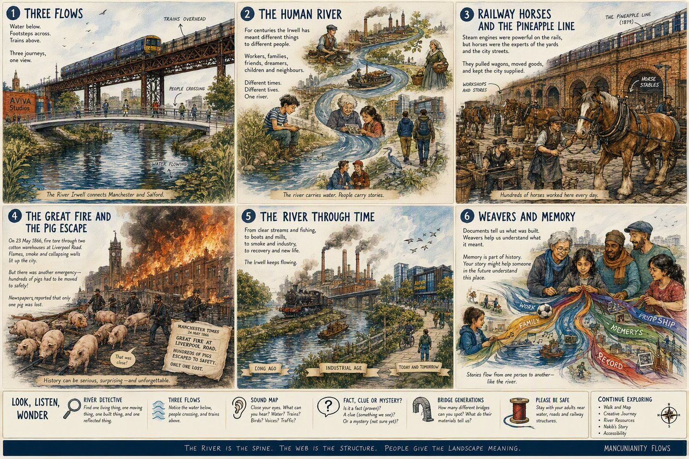
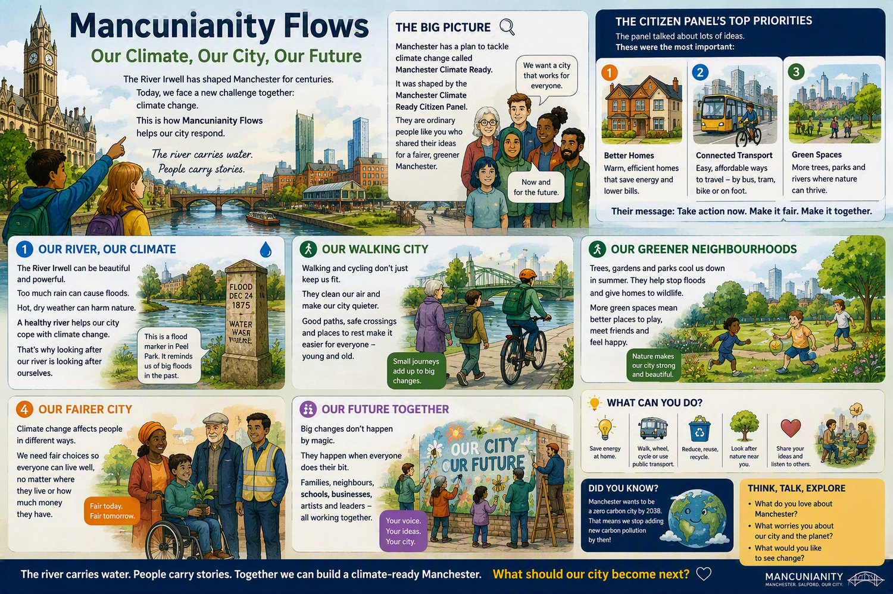

The experience
Follow the river. Hear the city. Join the chorus.
Mancunianity Flows is an immersive audio-theatre journey through one extraordinary quarter-mile of the River Irwell, where nearly 200 years of transport, industry, architecture, ecology and Manchester-Salford connections sit almost on top of one another.
Memories. Music. River. The city we share.
A city you can hear as well as see
Wear a supplied wireless headset and follow the Irwell through storytelling, local voices, songs, music and a specially created atmospheric soundscape. The landscape is not scenery. The real river, bridges, railway arches, waterways and buildings around you are the stage.
No phone, app or personal headphones are needed. Wireless headphones are supplied and hygienically prepared before each experience.

Why this quarter-mile?
Follow a transport web almost 200 years in the making
In 1844, French economist Léon Faucher described Manchester as a “diligent spider” at the centre of a web of roads and railways reaching towards the industrial towns around it.
This short stretch of the Irwell makes that idea unusually visible. River, canals, roads, warehouses, railways and bridges all meet here. The pioneering Liverpool and Manchester Railway opened in 1830, with Liverpool Road as its Manchester terminus, and surviving early railway structures remain part of this landscape.
Almost two centuries later, the Ordsall Chord returned to virtually the same crossing to create another railway connection through Manchester. Its modern River Irwell bridge sits beside George Stephenson's restored 1830 bridge.
1830 and 2017, almost in the same view.
Follow the Spider's Web
Take a little piece of Mancunianity Flows with you
We've created a free A4 souvenir map to accompany the experience. Follow the Spider's Web, add the date of your walk and make a note of a place, story or moment you want to remember.
Use it before you come, bring it with you, add to it afterwards or use it to retrace the river another day.
What will you remember from the Irwell?

What happens?
Arrive at Aviva Studios
Arrive 20 minutes before your booked start time for check-in, headset fitting and a short route briefing. Experiences leave promptly.
Follow the River Irwell
For around 50 minutes, move at an easy pace through approximately a quarter-mile of riverside landscape while stories, voices, songs and sound reveal layers of Manchester and Salford around you.
Cross from Manchester into Salford
Prince's Bridge carries the journey across the Irwell beneath the newer Ordsall Chord. The physical crossing becomes part of the story about connection between the two cities.
Stop and face the river
Take a seat on the Salford side, looking back across the Irwell towards Aviva Studios and a landscape of old and new bridges.
Hear a new song unveiled
For approximately 15 minutes, the experience changes from walking and listening to a musical finale created with local Weavers and artists.
Join in, if you want to
The audience is invited to join the chorus. No singing experience is needed. Singing is entirely optional and listening is equally welcome.
Water below. Footsteps beside it. Trains overhead.
Three journeys in one view
Around the River Irwell, water, walking and railway movement meet in one extraordinary landscape connecting Manchester and Salford. The experience follows those connections rather than treating history as something sealed behind glass.

The city gets another soundtrack
Listen while you look
Composer and sound artist Dr Simon Knighton is creating the atmospheric sound world carried through the wireless headphones. Simon is an Ivor Novello-nominated composer and Royal Musical Association Tippett Medal winner.
The idea is simple: look at a real bridge while hearing another layer of its story; walk beside the actual river while voices, music and sound alter the way you notice the place.
For a while, Manchester and Salford become the stage.
Can Manchester and Salford sing the same song?
A new chorus beside the Irwell
One of our local Weavers, Tony Easom, 76, is a Salford artist, former ship's plumber and folk songwriter. His memories of ships, tugs and locomotives, together with original words and music, are helping shape a new Mancunianity Flows song.
Experienced community choir leader Jules Gibb is helping develop the song into something people can enjoy singing together.
We are not looking for a perfect choir. We are creating a chorus people feel welcome to join.
A living river
The Irwell: work, damage, recovery and an unfinished future
The Irwell is not simply a route through industrial history. It is a living river.
In a House of Commons debate on 18 April 1950, MP Anthony Greenwood called it “the hardest working river in the whole of the United Kingdom”, describing more than 100 cotton mills along the Irwell and Roch as well as mines, tanneries, bleach works, paper mills, gas works and other industries.
That industrial work came with a severe environmental cost. Today the project also asks what flooding, biodiversity, water quality, urban nature and resilience mean for the river's future.
The Boxing Day 2015 floods are part of that continuing story. Around 750 properties were internally flooded in Lower Broughton, while the Environment Agency gauge at Manchester Racecourse recorded the Irwell at 5.67 metres, 1.3 metres higher than any previous reading in 75 years of recording.
What can a river remember? And what future do we want it to have?
Sources: UK Parliament, River Irwell (Pollution), 18 April 1950; Greater Manchester Boxing Day 2015 Flood Investigation Report.

Connecting blue and green spaces
Looking beyond the walk with CyanLines
Mancunianity Flows shares CyanLines' interest in helping people discover and reconnect with Manchester and Salford's rivers, canals, parks, green spaces and walking and wheeling routes.
CyanLines has a vision for more than 100 miles of connected green and blue routes, beginning across Manchester and Salford city centres and ultimately reaching across Greater Manchester. One of its pilot loops explores the Irwell and Castlefield.
Look, listen, wonder
- Where can water spread when river levels rise?
- Which features support wildlife?
- How do bridges and paths connect people?
- What hidden green or blue route would you open up?
- What should somebody walking here 50 years from now be able to discover?
Illustrated stories
People, work, animals and a river through time
The experience does not try to tell every story in this extraordinary landscape. These illustrated resources let you keep exploring railway horses, waterways, industry, environmental change and memories woven through Manchester and Salford.


Ready to follow the river?
Six experiences on 19, 20 and 21 December 2026 at 10:00 and 13:30. Or keep exploring the stories before you come.